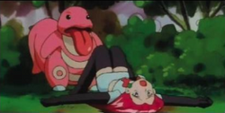

Pokémon
Pokémon (do japonês ポケモン, literalmente "monstros de bolso que você aprisiona contra a vontade deles") é uma franquia multimilionária sobre escravidão de animais fofinhos.
« "Gotta Fuck 'em All!" - Satoshi Tajiri »
Leia mais →A enciclopédia que conecta as maiores atrocidades e melhores da internet
MundiWiki é um projeto de enciclopédia livre e colaborativa que qualquer um pode editar (e sabotar). Aqui você encontrará artigos sobre tudo que a internet tem de melhor... e pior.
⚠️ Aviso: Todo o conteúdo desta wiki é fictício, satírico e não deve ser levado a sério. Se você se ofendeu, o problema é seu.
Pokémon (do japonês ポケモン, literalmente "monstros de bolso que você aprisiona contra a vontade deles") é uma franquia multimilionária sobre escravidão de animais fofinhos.
« "Gotta Fuck 'em All!" - Satoshi Tajiri »
Leia mais →Murder Drones é uma série animada sobre robôs assassinos futurísticos que, surpreendentemente, não são fabricados pela Boston Dynamics.
« "Todo Mundo em Pane" - Liam Vicker »
Leia mais →O Incrível Circo Digital é uma série sobre pessoas presas em um jogo digital perturbador, tipo Black Mirror mas com palhaços.
« Eu queria que garotas palhaços fossem uma raça real. »
Leia mais →Quer outros artigos? Uma coletânea de artigos estão aqui ou veja abaixo!
O Cantinho Paralelo é um servidor do discord com um tesão absurdo. sim, isso foi uma referência a helluva boss.
cujo nome Ítalo Vinícius, é o criador da MundiWiki e um ser humano questionável. Ele gosta de pokémon e webtoons.
Os ships de Pokémon (Pokimane) são doentes, você tem coragem para acessar esse artigo?
Pokémon Delta Force é um servidor de Roleplaying temático de pokémons, onde você finje ser um pokémon ou um FakeMon. Um exemplo do que se trata esses servidores assim é isso:

Braxen House ou mais um Roleplay de pokémon no Discord que tem muitos ~furrys~ usuários safadinhos procurando por sexo selvagem.
Atualmente temos 7 artigos de qualidade duvidosa
666 usuários banidos por vandalismo
∞ processos judiciais pendentes